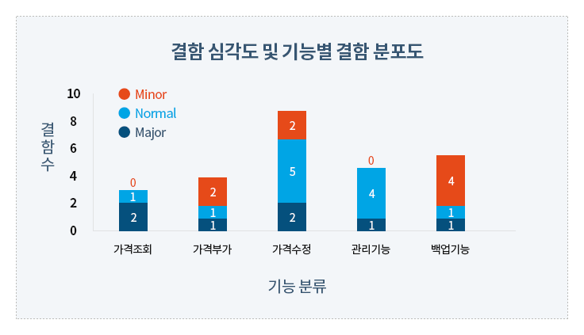
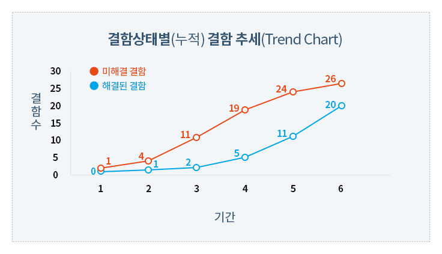
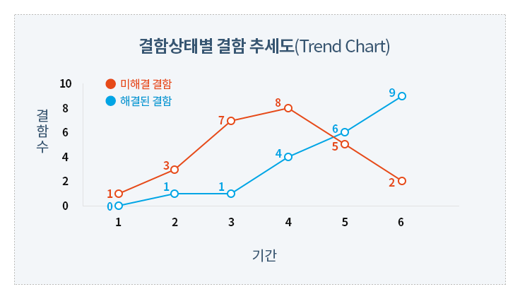

테스트 수행
개요
1. 목적
본 문서는 프로젝트 테스트 완료 후 결과를 분석하여 시스템 품질과 상태를 평가하고 보고하는 테스트 결과 요약 및 평가 프로세스를 기술한다
2. 적용범위
본 문서는 테스트 결과 분석을 통해 시스템 품질 및 테스트 수행 정도, 테스트 활동 자체의 효율성 및 효과성을 평가하는 방법에 대해 설명한다.
평가 결과로 나타난 문제들의 사후조치 방법이나 해결 방안, 관리/정책적인 문제 등에 대해서는 기술하지 않는다.
테스트 수행 도중 필요에 따라 결함원인을 분석하여 적합한 조치를 취할 수 있다("결함원인분석 가이드라인" 참조)
3. 결함관리 개요
테스트 수행 목적 중에서 결함 발견과 수정에 못지않게 중요한 사항이 테스트를 통해 현 시스템 상태 및 품질을 객관적으로 평가하는 것이다.
프로젝트는 테스트 중이거나 테스트 종료 후, 다음과 같은 질문에 답을 할 수 있어야 한다.
- 몇 개의 테스트 케이스가 존재하고 어떤 상태(예; 통과, 실패, 실행 불가능 등)에 있는가?
- 얼마나 많은 결함이 발견되었고, 이 결함들은 어떤 상태(예, 오픈, 수정 중, 재 테스트를 위한 대기 상태, 종료, 연기됨 등)에 있는가?
- 테스트 케이스와 결함간 어떤 패턴이 보이는가?
- 실패 테스트 케이스들의 경우, 이 케이스들과 관련된 결함들은 무엇인가?
- 얼마나 많은 테스트 케이스들이 아직 실행되지 못했는가? 결과적으로 시스템의 어떤 부분들이 아직 테스트 되지 못했고, 이로 인한 위험요인은 무엇인가?
- 소프트웨어 시스템의 상태는 무엇인가?
- 시스템이 운영되는데 문제는 없을 것인가? 즉, 안정성 예측
- 시스템이 이 상태로 인도/출시 될 수 있는가?
테스트 결과 요약 및 평가 활동은 테스트 계획서, 테스트 수행에서 나온 테스트 로그, 결함 보고서를 가지고 테스트 결과 요약 자료를 작성하는 것으로써, 테스트 수준에 따라 프로그램, 서브 시스템, 전체 시스템 별 결과를 요약하여 관리자나 사용자의 검토가 정확하게 이루어질 수 있도록 하는 것이다.
테스트 결과 요약 및 평가 활동에서는 또한 객관적인 품질평가가 가능하도록 테스트 결과들과 주요 테스트 측정치를 수집, 구성, 보고해야 한다.
테스트 결과 요약 및 평가 내용은 테스트 결과 보고서로 작성된다.
결함관리 활동 주요 Task 수행 지침
1. 결함관리 활동
결함관리활동은 각 개발단계 및 각 테스트 레벨 및 유형별 발견되는 결함 생명주기별 관리를 수행함으로써 발생 결함의 재 발생을 막고 유사 결함 발견 시 처리 시간을 단축하기 위한 활동이다. 결함은 일찍 발견 될수록 개발 비용을 절감할 수 있다.
| 입력물 | 작업 (Tasks) | 출력물 |
|---|---|---|
|
|
|
2. 테스트 결과 검토 및 분석
테스트 수행 결과로 작성된 모든 테스트 활동 기록(Test Logs)과 결함관리대장, 그리고 기타 테스트 실행 관련 정보를 검토한다.
의미 있는 테스트 결과 정보를 얻기 위해 테스트 로그와 결함관리대장에 있는 사건과 실패를 하나씩 식별하고 분석한다.
중복된 사건들, 공통적인 증상, 사건들간의 기타 다른 관계들이 있는지 들을 점검하여, 결함이 발생한 근본 원인 파악에 노력한다.
테스트 결과 검토 및 분석은 특성상 분석을 수행하는 개인의 능력에 크게 의존한다.
프로젝트나 테스트 결과 분석자는 아래 예와 같은 분석 점검기준을 작성, 분석을 수행함으로써 그 효과성을 높일 수 있다.
테스트 현황 분석을 위한 점검기준
- 지난주에 개발 인원에 변동 상황이 발생하여 발견되는 결함수가 줄어들고 있는가?
- 핵심 인력이 특정 날짜 이후로 부재중이었는가?
- 몇몇 개발자들 또는 테스터들이 프로젝트의 다른 부분에 할당되었는가?
- 아니면 시스템이 향상되어 이런 상황이 발생하였는가?
- 어떤 종류의 테스트가 실행되고 있는가?
- 동일한 테스트가 매 빌드마다 또는 매일 무의미하게 반복되고 있지 않는가? 이러한 테스트로 발견한 결함들이 처음에 동일한 테스트를 했을 때 이미 발견된 것이 아닌가? 따라서 결함이 점차 줄어들고 있는 것이 시스템 품질 개선으로 인한 것이라고 판단할 수 있는가?
- 개발자가 코드 검토 없이 단위 테스트를 시작하였는가? 발견되는 결함들이 테스트 사이클에 들어가기 전에 발견할 수 있는 종류의 결함인가?
- 테스터 엔지니어들이 매일 동일한 양의 테스트를 하는가?
- 상위 수준의 테스트에서 결함 수는 적지만 중요한 결함들이 나오는 성능 테스트 등의 작업을 수행하고 있는가?
- 테스트 대상 코드 자체에 중요한 변경사항이 발생되었는가?
- 많은 수의 결함이 발생된 특정 코드 부분이 수정되었는가?
- 특별히 문제가 많았던 부분이 제거되었는가?
- 결함 수정이 시작되어서 또는 결함 수정에 투입되는 자원을 대폭 늘려서 코드 안정화가 되었는가?
- 테스트 대상 영역 전체적으로 안정화가 되고 있는가? 아니면 부분적으로만 개선되고 있는가?
- 일부 영역은 개선이 되어 점점 적은 수의 결함이 나오고 있지만, 다른 영역은 현상 유지를 하고 있거나 상황이 더 나빠지고 있지는 않는가?
- 전체 영역이 실제 품질 개선의 징후를 보이고 있는가? (이 경우, 모든 다른 가능성들을 조사하여 실제로 그런지 증명해야 한다)
- 어떤 종류의 결함이 발견되고 있는가?
- 발견된 결함 심각도는 어느 정도인가?
- 심각한 결함 수가 증가하고 있는가, 감소하고 있나, 아니면 계속 동일한 레벨을 유지하고 있는가? 그리고 이것은 무엇을 의미하는가?
- 보고된 결함은 코드에 있는 결함들만 고려하고 있는가?
3. 테스트 활동 요약
테스트 활동 기록을 분석하여 테스트 수행 활동에 대한 요약한다.
테스트 계획서에 정의한 테스트 활동 계획과 실제 수행된 활동과 비교하여 차이점이 있다면 기록하고, 차이점이 나타난 이유와 그로 인해 발생 가능한 문제점/위험 들을 기록한다.
테스트 활동에 대한 수치적인 정보를 제공하는 메트릭을 측정하여 기록하고 테스트 효율성 및 효과성, 진행상황을 평가한다.
테스트 활동 평가 메트릭 예시
- 테스트 케이스 효율성(정확성) = 실행되는 테스트 케이스 수/총 개발된 테스트 케이스 수 * 100
- 테스트 케이스 효과성 = 결함 발견에 기여한 테스트 케이스 수/실행된 테스트 케이스 수 * 100
- 테스트 효과성 = 실제 개선된 건수 / 총 보고 결함건수(개선 요청 건수) * 100
- 테스트 효율성 = (결함으로 확정된 총 건수 / 총 보고 결함 건수) * 100
4. 결함 분석 및 평가
테스트 수행 동안 발견된 결함을 분석하여 의미 있는 정보를 도출한다.
테스트 커버리지 평가가 테스트 완전성에 대한 측정치를 제공한다면, 테스팅 동안 발견된 결함 평가는 테스트 대상 시스템에 대한 품질 및 신뢰성에 대한 정보를 제공한다.
※ 결함 평가는 단순 결함 수 계산부터 엄격한 통계 모델링 적용까지 다양한 방법을 적용하여 수행될 수 있다.
결함 분석을 하기 위해서는 측정치를 작성하여 이를 검토 분석 해야 하는데, 가장 공통적인 형태의 결함 측정치 (일반적으로 그래피컬한 형태로 나타냄)는 아래와 같다.
- 결함 분포(Defect Distribution/Density): 특정 속성(Attribute)에 해당되는 결함의 수
- 결함추세(Defect Trend): 시간의 흐름에 따른 결함의 수
- Defect Aging: 결함들이 특정 상태 (New, Open, Assigned, Fixed, Closed) 에 있는 시간
결함 분석 시,
하나 또는 그 이상의 결함 관련 파라미터(Parameter)와 연관하여 결함 분포를 분석하는데,
아래는 가장 많이 공통적으로 사용되는 결함 파라미터들은 아래와 같다.
- 결함의 현재 상태(Status): 오픈(Open), 수정 중, 당분간 수정 보류됨, 종료 등.
- 우선순위(Priority): 결함 해결(처리)의 상대적인 중요성
- 심각도(Severity): 결함의 상대적인 영향 정도(사용자, 조직, 제3자에게 미치는 영향)
- 소스(Source): 결함 발생 원인 공정 또는 근본적인 원인
테스트 엔지니어는 이러한 파라미터를 사용하여 표현한 측정치(그래프)를 분석하여, 특정 패턴이나 의미 있는 정보를 도출할 수 있어야 한다.
5. 결함 분포 분석
결함 상태 대 심각도 (Defect Status Versus Severity) : 결함 심각도 차트(Defect Severity Reports)는 특정 심각도 분류에 따라 각 유형에 몇 개의 결함이 있는지를 보여주는 그래프이다.
예를 들면 아래와 같은 심각도 분류가 가능하다.
<결함 심각도 및 기능별 결함 분포>

<결함심각도 분류 체계, 참고문서: 결함유형분류 가이드라인>
| 심각도 | 설 명 | 예 시 |
|---|---|---|
| Critical (치명적 결함) |
기능 수행으로 인하여 시스템 품질에 치명적인 영향을 미칠 때 | 프로그램 비정상 종료, 프로그램 비정상 중지, 데이터 손상, 메모리 누수 등 |
| Major (주요 결함) |
프로그램의 핵심 기능수행에 있어서 결함이 발생하는 상태 | 핵심 요구사항 미구현, 주요 기능 오작동, 응답시간 지연, 시스템 복구 후 데이터 왜곡 |
| Normal (일반적 결함) |
기능이 정상적으로 수행되는 경우가 존재하나, 비정상적인 값 혹은 예외적인 상황에서 결함이 발생하는 상태(시스템 흐름에 영향을 미치는 결함), 일반적인 문제이나 반드시 고쳐야 할 결함 | 부정확한 기능, 부정확한 프로세스 로직, 사소한 기능 오작동, 잘못된 인터페이스 등 |
| Minor (사소한 결함) |
기능상의 문제는 발생하지 않으나, 권고수준의 미흡한 부분이 존재하는 상태 혹은 사용자가 불편함을 느끼는 상태, 기능상 덜 중요한 결점이 발견되거나 쉽게 해결될 수 있는 문제가 나타남. 오∙탈자나 텍스트의 정렬이 잘못된 단순 외형적 문제점 | 스크린 표준 위반, 필드 형식 오류, 부정확한 GUI 및 메시지, 에러메시지 미출력, 문법/철자 오류 등 |
| Enhancement (개선사항) |
결함은 아니나, 사용자 편의성 확보를 위하여 기능 또는 성능 개선을 권고 | 개선이 필요한 사항 등 |
| Blocker | 기능 수행이 되지 않아 개발 혹은 테스팅 진행자체가 불가능하게 만드는 상태 |
6. Defect Aging 분석
Defect Aging Report는 결함 분포도(Defect Distribution Report)의 특별한 형태로서 결함이 얼마나 오래 동안 특정 상태 (New, Opend, Assigned, Fixed) 등에 머무르고 있는지를 나타낸다.
Defect Aging 분석은 테스트 효과성과 결함 제거 활동 등에 관하여 좋은 피드백을 제공한다.
예를 들어 많은 수의 결함들이 재 검증을 위해 오랜 기간 동안 대기 상태에 있다면, 현재 재 테스트(Re-test Effort)에 필요한 테스트 자원이 충분히 투입되지 못하고 있다는 것을 암시하는 것이다.
7. 결함 추세(Defect Trend) 분석
시간 흐름에 따른 테스트 실행 결과에 따른 결함 상태(new, open, or closed)를 보여 준다. 누적된 결과를 보여줄 수도 있고 누적되지 않은 값을 보여줄 수도 있다.
미해결/해결 결함 Trend Chart 예시
아래 그래프는 오픈 된 결함(Opened), 수정이 완료되어 종료된 결함(Closed), 누적된 오픈 결함 수(Cumulative Opened), 누적된 종료 결함 수(Cumulative Closed)를 보여준다.
결함 추세도는 일반적으로 테스트 사이클에서 예측 가능한 패턴을 가진다.
일반적으로 테스트 사이클 초기에는 결함율이 급격하게 상승하고 일정 시간이 지나면 최고 정점에 도달한 후 시간이 경과함에 따라 서서히 떨어지는 형태를 보인다.
예를 들어 아래 그래프는 전형적인 결함 추세도 형태를 보여주고 있다.
이러한 예측 가능한 결함 패턴은 테스트 상태 또는 시스템 상태를 파악하는데 좋은 자료가 되는데, 예를 들어 10주의 테스트 일정을 가진 프로젝트에서 8주가 경과되었음에도 불구하고 결함 발견율이 계속 증가하고 있다면, 테스트가 제 일정대로 진행되지 못하고 있거나 시스템이 품질에 심각한 문제가 있다는 것을 암시한다.
<결함 추세(누적)>

<상태별 결함 추세>

위에서 설명된 세 가지 유형의 결함 분석 차트들은 SW 품질 평가에 유용한 정보를 제공하고, 테스트 커버리지와 더불어 테스트 종료 기준을 세우고 측정하는데 사용될 수 있다. 그러나 테스트 커버리지와 마찬가지로 이러한 유형의 결함 리포트 생성이 효과적이기 위해서는 일반적으로 자동화 시스템 지원이 필수적이다.
8. 테스트 결과 요약 및 시스템 품질 평가
앞 단계의 테스트 결과 분석을 바탕으로 테스트 결과를 의미 있는 정보로 요약 정리 한다.
테스트 결과 요약 방법의 예
- 테스트 요구사항별 결과 요약
- 기능영역별, 서브 시스템별, 단위 모듈별 테스트 결과 요약
분석 결과를 기반으로 시스템의 품질 안전성, 신뢰성 등에 관해 전반적인 평가 및 피드백를 내린다. 시스템 품질과 관련하여 좋은 측면과 나쁜 측면에 대해 기술한다.
특성상 테스터나 개인의 주관적인 견해도 어느 정도 추가될 수 있지만, 되도록 객관적인 사실에 기반 하여 평가를 하려 노력해야 한다.
테스트가 적절하게 되지 못한 부분이나 두드러지는 품질 위험 요인을 기술한다. 가장 시급하게 해결되어야 할 문제들, 추가적인 테스트 노력이 필요한 부분 등을 식별하고 기술한다.
top